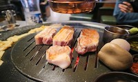
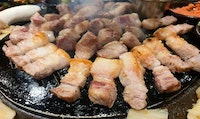
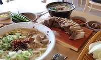

The Jeju Black Pig(Korean: 제주흑돼지; RR: Jeju heukdwaeji) is a Korean breed of domestic pig. Pork from the Jeju Black is said to have a unique taste, and forms the basis of some local dishes. It is smoked over burning hay, which gives it an unusual flavour and a chewy consistency.



Jeju Meat Noodle(고기국수)
Pork Noodle Soup is a noodle variant that is available only on Jeju Island and not anywhere else in South Korea. Back in the olden days when resources were scarce, pork and noodles were considered to be premium food ingredients. Hence, Gogi-guksu was only prepared and meant to be consumed during special occasions.
Jeju Seafood(해산물)
The Jeju Black Pig(Korean: 제주흑돼지; RR: Jeju heukdwaeji) is a Korean breed of domestic pig. Pork from the Jeju Black is said to have a unique taste, and forms the basis of some local dishes. It is smoked over burning hay, which gives it an unusual flavour and a chewy consistency.